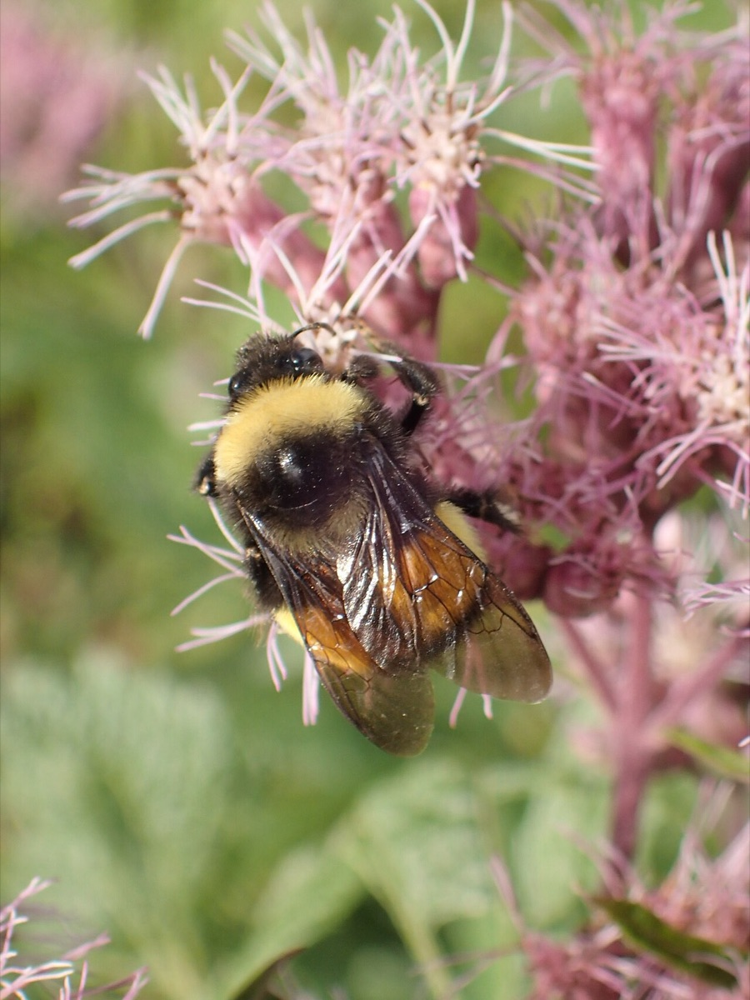
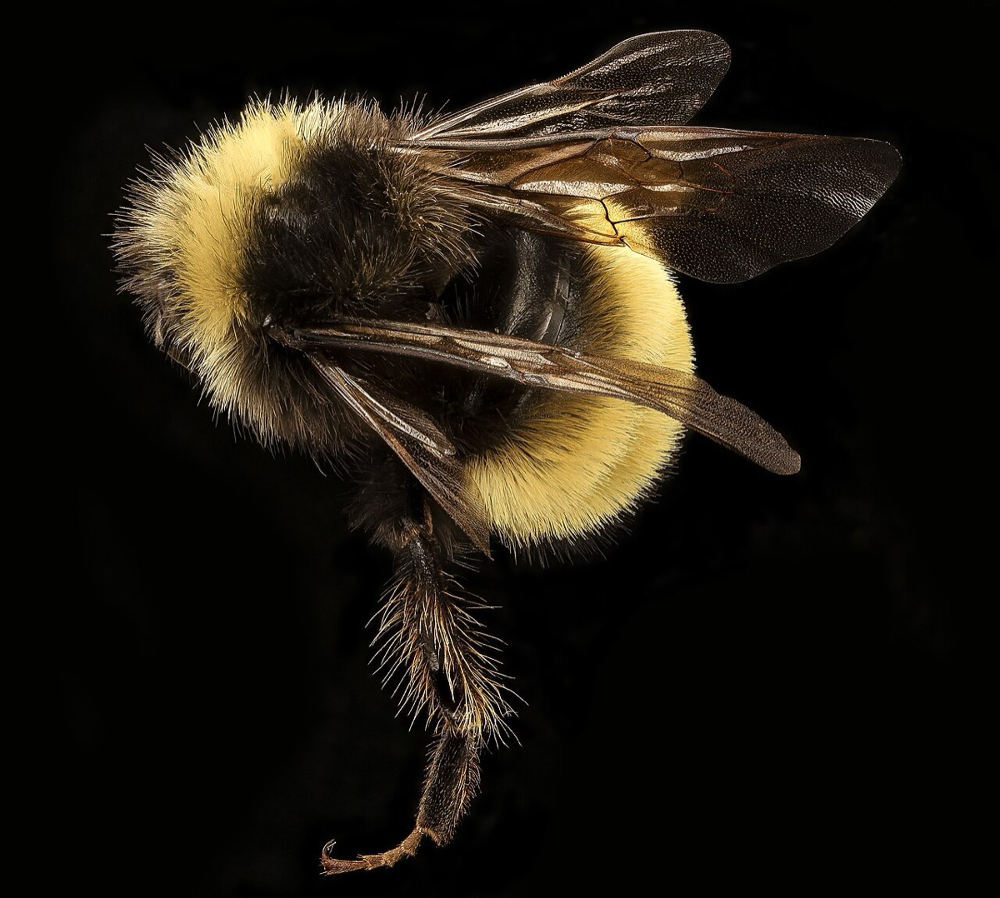

Yellow-banded Bumble Bee
Bombus terricola
- Kind
- insect
- Native to Vermont
- yes
- Legal status
- State threatened in Vermont (Atlas species table and species page: 'recently listed as Threatened') (checked 2026-10-30)
- Look-alikes
- American bumble bee (Bombus pensylvanicus); named as similar on the species page
Pictures


Names
Yellow-banded bumble bee, Bombus terricola. A social bumble bee (Bumble Bees).
Range and habitat
Once common across the Northeast and south into Georgia; its populations have declined dramatically over the past 15 years (species page; the cited report is from 2014). A search summary says it has rebounded in most of Vermont, though not as much elsewhere in its range. It nests underground. A search summary also says it uses a wide range of habitats including woodland, meadow, wetland and farmland.
How to identify (by season; look-alikes and the key difference)
The species page describes no marks. The Atlas identification page codes its abdomen (terga T1 to T6, hair color) as black, yellow, yellow, black, black, black. The species page names the American bumble bee as similar. See Bumble Bees for how to photograph a bumble bee so that it can be identified.
Through the year
Dates are typical for Vermont and shift with elevation and year; "approximate" means the source gave a season and the dates are a translation of it.
| When | What | Look for | What to do | Dates |
|---|---|---|---|---|
| Apr 1 to Sep 30 | flight (watch) | Queens fly from April to September and workers from May to September. Yellow-banded bumble bees nest underground and visit willows, blueberries, roses, brambles, bush honeysuckles, goldenrods and asters. | - | stated |
| May 1 to Oct 31 | adult (watch) | Males fly from May to October. | - | stated |
Signs on the land (tracks, scat, browse, nests, holes, calls)
Bees on the food plants above; underground nests are rarely seen.
Role in the forest (what it eats, what eats it, what it needs)
Food plants (species page): blueberries and their relatives, willows, roses, brambles, honeysuckles, goldenrods and asters. It is parasitized by Ashton's cuckoo bumble bee, itself state endangered.
What helps it thrive (light, soil, shelter, food and the trees it uses)
- A patchwork of habitats with flowers all season, and places to nest. Chapter 31 of the Guide (recorded in Pollinator Habitat on Forest and Field): keep forest, forest with sunny openings, wetlands and old fields with a mix of flowering plants; keep flowers on field edges, lawn edges and hedgerows; the plants bees favor include goldenrod, aster, willows, the blueberry family and dogwood, with maples, willows and apples key early in spring; leave bare or sparse, uncompacted soil, dead wood, pithy stems and slash for nests; limit pesticides, especially dusts, pellets and neonicotinoids and anything applied to flowers.
- For this group: a state threatened species; the sources read give no Vermont-specific need beyond the habitat and nest features above.
Managing for it (habitat practices) and living with it (conflicts and damage)
The species page gives no landowner advice. General pollinator practices are in Pollinator Habitat on Forest and Field. Report a sighting through the Atlas.
Legal status
State threatened. Do not collect or disturb; ask Vermont Fish & Wildlife before work that could affect a listed species.
Sources
- Vermont Atlas of Life, Yellow-banded Bumble Bee (Bombus terricola): https://val.vtecostudies.org/projects/bumble-bee-atlas/bombus-terricola/ (read 2026-10-30)
- Vermont Atlas of Life, Field Guide to the Bumble Bees of VT: https://val.vtecostudies.org/projects/bumble-bee-atlas/bumble-bees-through-binoculars/
- Vermont Fish & Wildlife Department, A Landowner's Guide, Wildlife Habitat Management for Lands in Vermont, chapter 31 (Bees and Other Plant Pollinators): https://vtfishandwildlife.com/sites/fishandwildlife/files/documents/Learn%20More/LandownersGuide/Landowner-Guide-Complete.pdf (read as text 2026-11-01)
What this page is based on
Kind of source: primary (Vermont Atlas of Life species page, summarizing fetch; identification page)
What was read: Vermont Atlas of Life species page for Bombus terricola and the Atlas identification page, read through summarizing fetches on 2026-10-30. The species page gives no identification marks, habitat or landowner advice and no last-updated date (it cites a 2014 documentation report and a 2015 citation date). The abdomen pattern code is from the identification page. The statement that it has rebounded in most of Vermont is from a search summary of a Vermont Center for Ecostudies page and was not read on the page. Habitat needs added 2026-11-01 from chapter 31 of the Vermont Fish and Wildlife Landowner's Guide (read as text).
Last checked: 2026-10-30
Vermont land and forest reference, built 2026-11-01. Rules and dates here are summaries, not legal advice; dates shift with elevation and year. Photo and recording credits · Note: _reference/US-VT/Species/Yellow-banded Bumble Bee.md